Applied Spatial Data Analysis
Chapter 2 - Distance Based Methods
Introduction
This lecture develops distance-based methods for spatial point pattern analysis.
We focus on:
- nearest-neighbour and empty-space distances;
- tests and graphical diagnostics for complete spatial randomness;
- the functions \(G\), \(F\), and \(J\);
Outline
- Distance-based methods
- Clark–Evans and Hopkins–Skellam indices
- The \(G\), \(F\), and \(J\) functions
Recommended resources
- Baddeley, Rubak, and Turner, Spatial Point Patterns: Methodology and Applications with R.
- Cressie, Statistics for Spatial Data.
- Wiegand and Moloney, Handbook of Spatial Point-Pattern Analysis in Ecology.
- The official
spatstatdocumentation and vignettes.
Distance-based methods
Events, reference locations, and distances
An event is an observed point in the pattern. A reference location is any location inside the observation window.
Three useful distances are:
- pairwise distance between every distinct pair of events;
- event-to-event nearest-neighbour distance, denoted by \(D\);
- point-to-event empty-space distance, denoted by \(E\).
Example point pattern
Pairwise distances
For events at locations
\[ \mathbf{x}_1,\mathbf{x}_2,\ldots,\mathbf{x}_n, \]
the pairwise distance between events \(i\) and \(j\) is
\[ d_{ij}=\lVert \mathbf{x}_i-\mathbf{x}_j\rVert. \]
pairD <- pairdist(pp_csr)
round(pairD[1:min(4, nrow(pairD)), 1:min(4, ncol(pairD))], 3) [,1] [,2] [,3] [,4]
[1,] 0.000 0.293 0.516 0.284
[2,] 0.293 0.000 0.598 0.463
[3,] 0.516 0.598 0.000 0.255
[4,] 0.284 0.463 0.255 0.000e2e distances - Event-to-event distance
The nearest-neighbour distance for event \(i\) is
\[ D_i=\min_{j\ne i}d_{ij}. \]
e2e <- nndist(pp_csr)
head(e2e)[1] 0.11056220 0.05419105 0.08163249 0.05574520 0.19907565 0.03191166summary(e2e) Min. 1st Qu. Median Mean 3rd Qu. Max.
0.02472 0.04156 0.07525 0.08013 0.10574 0.19908 Visualising nearest neighbours

swp dataset
swp <-spatstat.geom::rescale(swedishpines)
PD = pairdist(swp)
class(PD)[1] "matrix" "array" dm <- as.matrix(PD)
dm[1:5, 1:5] [,1] [,2] [,3] [,4] [,5]
[1,] 0.000000 2.700000 3.701351 1.503330 5.433231
[2,] 2.700000 0.000000 1.004988 1.204159 2.765863
[3,] 3.701351 1.004988 0.000000 2.200000 1.772005
[4,] 1.503330 1.204159 2.200000 0.000000 3.931921
[5,] 5.433231 2.765863 1.772005 3.931921 0.000000diag(dm) <- NA
#dm[1:5, 1:5]
wdmin <- apply(dm, 1, which.min)
dmin <- apply(dm, 1, min, na.rm=TRUE)
head(dmin)[1] 1.5033296 0.8544004 1.0049876 0.9055385 1.0770330 0.8544004# which is the same as nndist e2e=nndist(swp)
dmin = nndist(swp)
plot(swp)
xy = cbind(swp$x, swp$y)
ord <- rev(order(dmin))
far25 <- ord[1:71]
neighbors <- wdmin[far25]
points(xy[far25, ], col='blue', pch=20)
points(xy[neighbors, ], col='red')
# drawing the lines, easiest via a loop
for (i in far25) {
lines(rbind(xy[i, ], xy[wdmin[i], ]), col='red')
}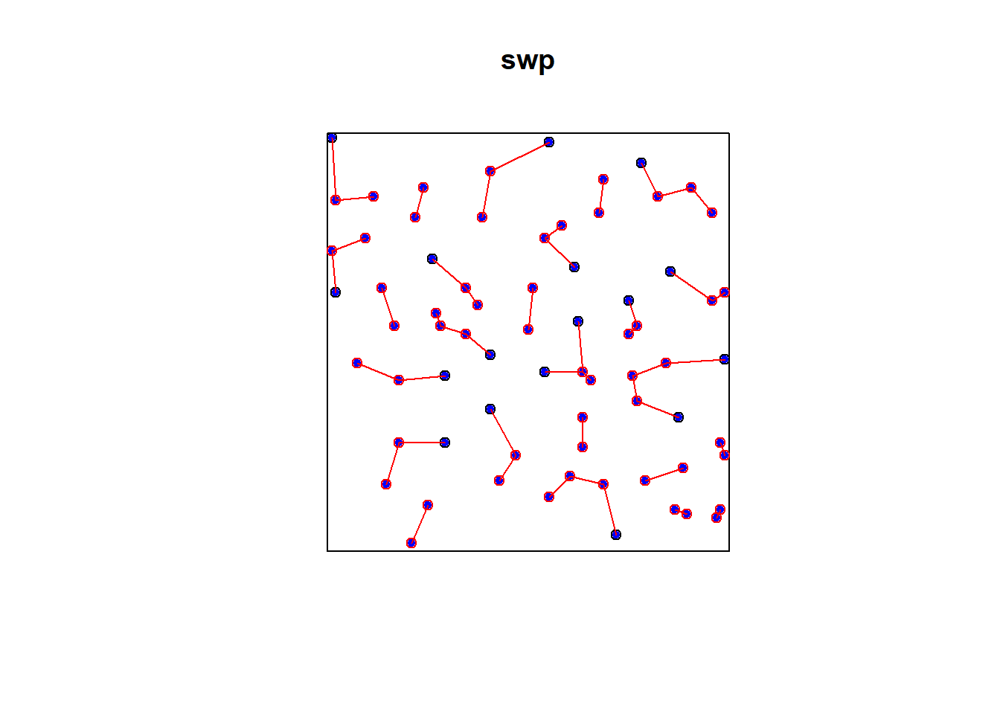
Simulated CSR Pattern
e2e_csr = nndist(pp_csr)
e2e_csr [1] 0.11056220 0.05419105 0.08163249 0.05574520 0.19907565 0.03191166
[7] 0.10456756 0.15049858 0.16325765 0.02841510 0.05044346 0.05419105
[13] 0.10456756 0.07525211 0.02471890 0.08651227 0.03700818 0.06471165
[19] 0.12663659 0.08163249 0.06471165 0.07525211 0.14362670 0.03195288
[25] 0.09669706 0.03195288 0.09731910 0.04284774 0.11297958 0.03191166
[31] 0.13454666 0.02841510 0.02471890 0.06711512 0.10924574 0.04269836
[37] 0.09947882 0.03815278 0.14362670 0.10235020PD = pairdist(pp_csr)
class(PD)[1] "matrix" "array" dm <- as.matrix(PD)
dm[1:5, 1:5] [,1] [,2] [,3] [,4] [,5]
[1,] 0.0000000 0.2930205 0.5163115 0.2844957 0.7955061
[2,] 0.2930205 0.0000000 0.5975953 0.4633681 0.8993362
[3,] 0.5163115 0.5975953 0.0000000 0.2546708 0.3017974
[4,] 0.2844957 0.4633681 0.2546708 0.0000000 0.5130861
[5,] 0.7955061 0.8993362 0.3017974 0.5130861 0.0000000diag(dm) <- NA
#dm[1:5, 1:5]
wdmin <- apply(dm, 1, which.min)
dmin <- apply(dm, 1, min, na.rm=TRUE)
head(dmin)[1] 0.11056220 0.05419105 0.08163249 0.05574520 0.19907565 0.03191166# which is the same as nndist e2e=nndist(swp)
dmin = nndist(pp_csr)
plot(pp_csr)
xy = cbind(pp_csr$x, pp_csr$y)
ord <- rev(order(dmin))
far25 <- ord[1:40]
neighbors <- wdmin[far25]
points(xy[far25, ], col='blue', pch=20)
points(xy[neighbors, ], col='red')
# drawing the lines, easiest via a loop
for (i in far25) {
lines(rbind(xy[i, ], xy[wdmin[i], ]), col='red')
}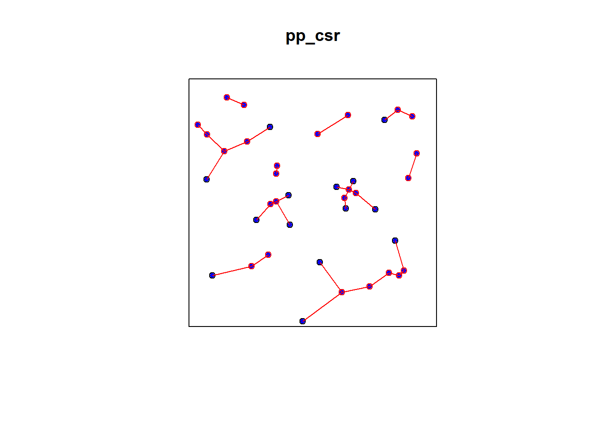
Simulated Cluster Pattern
e2e_cluster = nndist(pp_cluster)
e2e_cluster [1] 0.01854666 0.03502091 0.01854666 0.04969353 0.03502091 0.03390187
[7] 0.01268286 0.05624330 0.01268286 0.03830134 0.04275255 0.02983313
[13] 0.04275255 0.02983313 0.03774271 0.03774271 0.03391843 0.01376367
[19] 0.01376367 0.03500058 0.08344093 0.06403124 0.05422191 0.08344093
[25] 0.03500058 0.08988091 0.04304986 0.07202173 0.04586212 0.02906394
[31] 0.08760076 0.11053898 0.04586212 0.02906394 0.05896243 0.07149045
[37] 0.04361429 0.04361429 0.05745563 0.07483198PD_cluster = pairdist(pp_cluster)
class(PD_cluster)[1] "matrix" "array" dm_cluster <- as.matrix(PD_cluster)
dm_cluster[1:5, 1:5] [,1] [,2] [,3] [,4] [,5]
[1,] 0.00000000 0.09345138 0.01854666 0.04969353 0.07093497
[2,] 0.09345138 0.00000000 0.08597921 0.13688899 0.03502091
[3,] 0.01854666 0.08597921 0.00000000 0.05097721 0.05847323
[4,] 0.04969353 0.13688899 0.05097721 0.00000000 0.10757315
[5,] 0.07093497 0.03502091 0.05847323 0.10757315 0.00000000diag(dm_cluster) <- NA
wdmin_cluster <- apply(dm_cluster, 1, which.min)
dmin_cluster <- apply(dm_cluster, 1, min, na.rm=TRUE)
head(dmin_cluster)[1] 0.01854666 0.03502091 0.01854666 0.04969353 0.03502091 0.03390187# which is the same as nndist e2e=nndist(swp)
dmin_cluster = nndist(pp_cluster)
plot(pp_cluster)
xy_cluster = cbind(pp_cluster$x, pp_cluster$y)
ord <- rev(order(dmin_cluster))
far25 <- ord[1:40]
neighbors <- wdmin_cluster[far25]
points(xy_cluster[far25, ], col='blue', pch=20)
points(xy_cluster[neighbors, ], col='red')
# drawing the lines, easiest via a loop
for (i in far25) {
lines(rbind(xy_cluster[i, ], xy_cluster[wdmin_cluster[i], ]), col='red')
}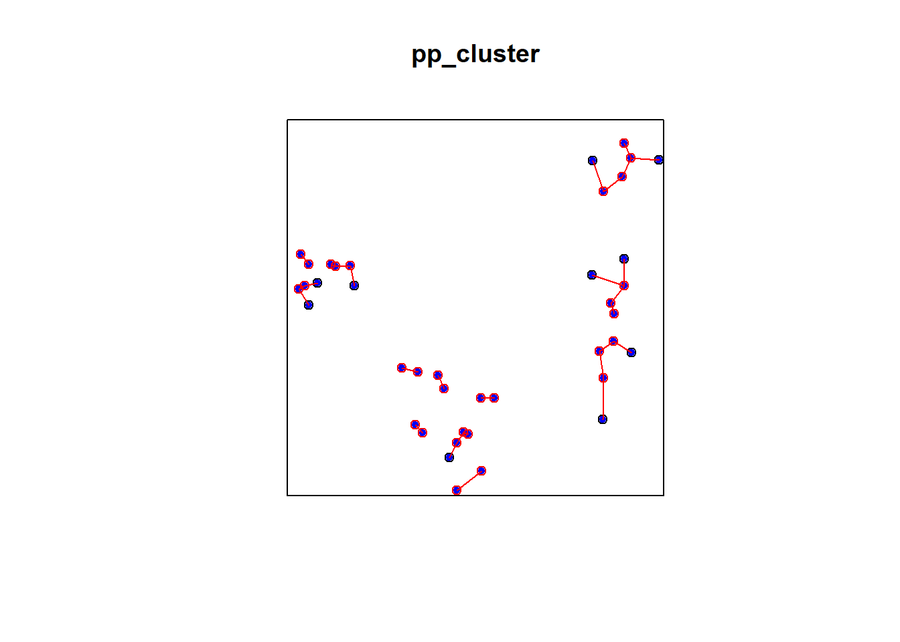
Simulated Regular Pattern
e2e_regular = nndist(pp_regular)
e2e_regular [1] 0.1111111 0.1111111 0.1111111 0.1111111 0.1111111 0.1111111 0.1111111
[8] 0.1111111 0.1111111 0.1111111 0.1111111 0.1111111 0.1111111 0.1111111
[15] 0.1111111 0.1111111 0.1111111 0.1111111 0.1111111 0.1111111 0.1111111
[22] 0.1111111 0.1111111 0.1111111 0.1111111 0.1111111 0.1111111 0.1111111
[29] 0.1111111 0.1111111 0.1111111 0.1111111 0.1111111 0.1111111 0.1111111
[36] 0.1111111 0.1111111 0.1111111 0.1111111 0.1111111PD_regular = pairdist(pp_regular)
class(PD_regular)[1] "matrix" "array" dm_regular <- as.matrix(PD_regular)
dm_regular[1:5, 1:5] [,1] [,2] [,3] [,4] [,5]
[1,] 0.0000000 0.1666667 0.3333333 0.5000000 0.6666667
[2,] 0.1666667 0.0000000 0.1666667 0.3333333 0.5000000
[3,] 0.3333333 0.1666667 0.0000000 0.1666667 0.3333333
[4,] 0.5000000 0.3333333 0.1666667 0.0000000 0.1666667
[5,] 0.6666667 0.5000000 0.3333333 0.1666667 0.0000000diag(dm_regular) <- NA
wdmin_regular <- apply(dm_regular, 1, which.min)
dmin_regular <- apply(dm_regular, 1, min, na.rm=TRUE)
head(dmin-regular) X Y
1 -0.05610447 -0.0005489143
2 -0.27914228 -0.0569200607
3 -0.41836751 -0.0294786165
4 -0.61092147 -0.0553659112
5 -0.63425768 0.0879645408
6 -0.13475501 -0.1903105666# which is the same as nndist e2e=nndist(swp)
dmin_regular = nndist(pp_regular)
plot(pp_regular)
xy_regular = cbind(pp_regular$x, pp_regular$y)
ord <- rev(order(dmin_regular))
far25 <- ord[1:40]
neighbors <- wdmin_regular[far25]
points(xy_regular[far25, ], col='blue', pch=20)
points(xy_regular[neighbors, ], col='red')
# drawing the lines, easiest via a loop
for (i in far25) {
lines(rbind(xy_regular[i, ], xy_regular[wdmin_regular[i], ]), col='red')
}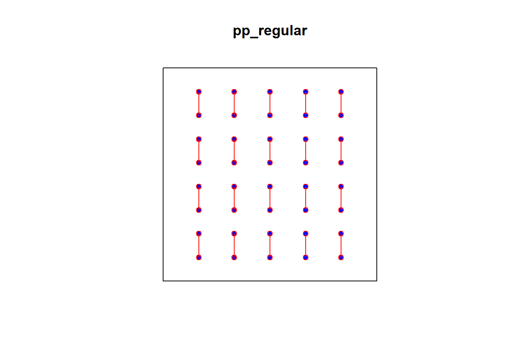
p2e distance - Point-to-event distance
For an arbitrary reference location \(\mathbf{u}\), the empty-space distance is
\[ E(\mathbf{u})=\min_i\lVert\mathbf{u}-\mathbf{x}_i\rVert. \]
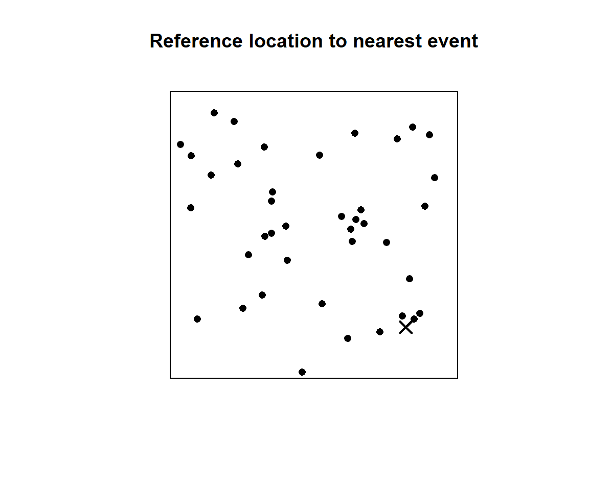
Distance-based tests of CSR
Several methods for deciding whether a point pattern is completely random, using e2e and p2e distances that could be measured in a field study. Common methods include:
- Clark–Evans index and test;
- Hopkins–Skellam index and test;
- nearest-neighbour distribution function \(G\);
- empty-space distribution function \(F\); and
- combined diagnostic \(J\).
Clark–Evans index
Clark and Evans proposed the following:
- Take the average of the e2e distances (D) for m randomly sampled points in a point pattern (or for all data points),
\[ \overline{D}=\frac{1}{n}\sum_{i=1}^{n}D_i \]
be the observed mean nearest-neighbour distance. Under an ideal homogeneous Poisson process with intensity \(\lambda\),
\[ \operatorname{E}[D]=\frac{1}{2\sqrt{\lambda}}. \]
Divide the average observed e2e distance to the expected value under CSR (Cliff, Ord, 10981, pp.105)
\[ R=\frac{\overline{D}}{1/(2\sqrt{\lambda})}. \]
The Clark-Evans test of CSR is performed by approximating the distribution of R under CSR by a normal distribution with (Baddeley, A., Rubak, E., Turner, R., Spatial Point Patterns, Methodology and Applications in R, page 258):
\[R \sim N\left(1,\; \frac{4-\pi}{\pi n}\right)\]
The spatstat functions clarkevans and clarkevans.test perform these calculations.
An important weakness of the Clark-Evans test is that it assumes that the point process is stationary. An inhomogeneous point pattern will typically give \(R < 1\), and can produce spurious significance.
Interpreting the Clark–Evans index
- \(R=1\): consistent with CSR;
- \(R>1\): events are farther apart than expected, suggesting regularity;
- \(R<1\): events are closer together than expected, suggesting clustering.
The intensity estimate is
\[ \widehat{\lambda}=\frac{n}{|W|}. \]
Clark–Evans calculation in R - PP-CSR
lambda_hat <- intensity(pp_csr)
mean_D <- mean(nndist(pp_csr))
expected_D <- 1 / (2 * sqrt(lambda_hat))
R_manual <- mean_D / expected_D
c(
intensity = lambda_hat,
observed_mean_D = mean_D,
expected_mean_D = expected_D,
R = R_manual
) intensity observed_mean_D expected_mean_D R
40.00000000 0.08012828 0.07905694 1.01355146 clarkevans(pp_csr) naive Donnelly cdf
1.0135515 0.9443703 0.9719128 clarkevans.test(pp_csr, correction = "none")
Clark-Evans test
No edge correction
Z-test
data: pp_csr
R = 1.0136, p-value = 0.8698
alternative hypothesis: two-sidedClark–Evans calculation in R - SWP
e2e=nndist(swp)
e2e [1] 1.5033296 0.8544004 1.0049876 0.9055385 1.0770330 0.8544004 0.9055385
[8] 0.9486833 1.0440307 0.9486833 1.0440307 1.0770330 0.9848858 0.7280110
[15] 0.7280110 0.9848858 1.0630146 0.3162278 0.3162278 1.1045361 1.1000000
[22] 0.6324555 0.5000000 0.5000000 1.1180340 1.2529964 0.7810250 1.1180340
[29] 0.7211103 0.7211103 1.0049876 1.0049876 0.9000000 0.5000000 1.5652476
[36] 0.7071068 0.5000000 0.7071068 0.9899495 1.2041595 0.2828427 0.7000000
[43] 0.7000000 0.2828427 0.8062258 0.8062258 0.8246211 1.2369317 0.2828427
[50] 0.6324555 0.6082763 0.6082763 0.2828427 0.8944272 0.9486833 0.8246211
[57] 0.8544004 1.2206556 0.3162278 1.0770330 0.9486833 0.3162278 0.7810250
[64] 0.3605551 0.7810250 0.2236068 0.2236068 0.3162278 0.3162278 1.4035669
[71] 0.3605551mean(e2e) [1] 0.7907541mean(e2e)/(1/(2*sqrt(intensity(swp))))[1] 1.360082clarkevans(swp) naive Donnelly cdf
1.360082 1.291069 1.322862 clarkevans.test(swp, correction = "none")
Clark-Evans test
No edge correction
Z-test
data: swp
R = 1.3601, p-value = 6.459e-09
alternative hypothesis: two-sidedn <- npoints(swp)
var = (4-pi)/(n*pi)
var [1] 0.003848444Z = (1.360082-1)/sqrt(var)
Z[1] 5.80442clarkevans.test(swp)
Clark-Evans test
Donnelly correction
Z-test
data: swp
R = 1.2911, p-value = 7.703e-07
alternative hypothesis: two-sidedApproximate Clark–Evans test
One common large-sample approximation uses
\[ \operatorname{Var}(R)\approx\frac{4-\pi}{n\pi}. \]
The test statistic is
\[ Z=\frac{R-1}{\sqrt{(4-\pi)/(n\pi)}}. \]
n <- npoints(pp_csr)
var_R <- (4 - pi) / (n * pi)
Z <- (R_manual - 1) / sqrt(var_R)
p_value <- 2 * pnorm(abs(Z), lower.tail = FALSE)
c(Z = Z, p_value = p_value) Z p_value
0.1639624 0.8697607 Hopkins–Skellam method
Hopkins and Skellam proposed taking the e2e distances D for m randomly sampled data points, and the p2e distances E for an equal number m of randomly sampled spatial locations.
If the point pattern is completely random, events are independent of each other, so the distance from an event to the nearest other event should have the same probability distribution as the distance from a fixed spatial location to the nearest event.
That is, the values D and E should have the same distribution. The Hopkins-Skellam Index is calculated as follows:
\[ A=\frac{\sum_{i=1}^{m}D_i^2}{\sum_{i=1}^{m}E_i^2}. \]
A = 1 is consistent with a completely random pattern, A > 1 with regularity, A < 1 is consistent with clustering.
The Hopkins-Skellam test compares the value of A to the F distribution with parameters (2m,2m).
Interestingly the Hopkins-Skellam index is much less sensitive than the Clark-Evans index to problems such as edge effect bias and spatial inhomogeneity.
Hopkins–Skellam calculation
set.seed(2026)
m <- min(15, npoints(pp_csr))
selected <- sample(seq_len(npoints(pp_csr)), m)
D_sample <- nndist(pp_csr)[selected]
random_locations <- runifpoint(m, win = Window(pp_csr))
E_sample <- nncross(random_locations, pp_csr)$dist
A <- sum(D_sample^2) / sum(E_sample^2)
A[1] 0.5772041Other indices

Ref: Noel Cressie, (1991). Statistics for Spatial Data, Wiley, page604.
Strengths and limitations of single-number indices
Advantages:
- easy to calculate and communicate;
- useful for comparing many patterns;
- convenient for monitoring change over time.
Limitations:
- compress spatial structure into one number;
- combine effects from different distances;
- do not reveal where in the study region departures occur;
- can confound inhomogeneity with interaction.
The G and F functions - Observed and Expected Distributions of e2e and p2e distances
For a homogeneous Poisson process with intensity \(\lambda\), the probability that a disc of radius \(r\) contains no events is
\[ \Pr\{N(A(\mathbf{u},r))=0\}=\exp(-\lambda\pi r^2). \]

\[ \Pr\{d(u,X)>r\}=\Pr \{n(X \cap a(u,r))=0\}=\exp(-\lambda\pi r^2) \]
Therefore,
\[ 1-\exp(-\lambda\pi r^2) \]
is the probability that at least one event lies within distance \(r\).
G function - Cumulative frequency distribution of nearest neighbourhood distances
The nearest-neighbour distribution function is
\[ G(r)=\Pr(D\le r). \]
It is the proportion of observed events whose nearest neighbour is no farther than \(r\).
Under CSR,
\[ G_{\text{CSR}}(r)=1-\exp(-\lambda\pi r^2). \]
Manual empirical G function
The empirical nearest-neighbour distribution function is
\[ \hat{G}(r) = \frac{1}{n} \sum_{i=1}^{n} I(D_i \le r), \]
where the indicator function is defined as
\[ I(D_i \le r) = \begin{cases} 1, & \text{if } D_i \le r, \\ 0, & \text{otherwise}. \end{cases} \]
Thus, \(\hat{G}(r)\) is simply the proportion of nearest-neighbour distances that are less than or equal to \(r\). It is the empirical cumulative distribution function (ECDF) of the nearest-neighbour distances.
- First calculate the unique nearest neighbour distances between events.
- Sort them from smallest to largest.
D <- nndist(pp_csr)
max(D) [1] 0.1990757distance <- c(0,sort(unique(D)))
distance [1] 0.00000000 0.02471890 0.02841510 0.03191166 0.03195288 0.03700818
[7] 0.03815278 0.04269836 0.04284774 0.05044346 0.05419105 0.05574520
[13] 0.06471165 0.06711512 0.07525211 0.08163249 0.08651227 0.09669706
[19] 0.09731910 0.09947882 0.10235020 0.10456756 0.10924574 0.11056220
[25] 0.11297958 0.12663659 0.13454666 0.14362670 0.15049858 0.16325765
[31] 0.19907565- Count how many events exist that are less than the distances (either empirical or chosen at an interval - I will use interval (0-max dist) with small increments). (This could be achieved using
plot(Gest())function in R. Always a good practice to do this manually first.)
r_values = sequence <- seq(from = 0, to = 0.2, by = 0.005)
G_empirical = vapply(
r_values,
function(r) mean(D <= r),
numeric(1)
)
head(data.frame(r = r_values, G = G_empirical), 10) r G
1 0.000 0.00
2 0.005 0.00
3 0.010 0.00
4 0.015 0.00
5 0.020 0.00
6 0.025 0.05
7 0.030 0.10
8 0.035 0.20
9 0.040 0.25
10 0.045 0.30
G function using spatstat
G_csr <- Gest(pp_csr, correction = c("rs", "km"))
plot(G_csr, main = "Nearest-neighbour distribution function")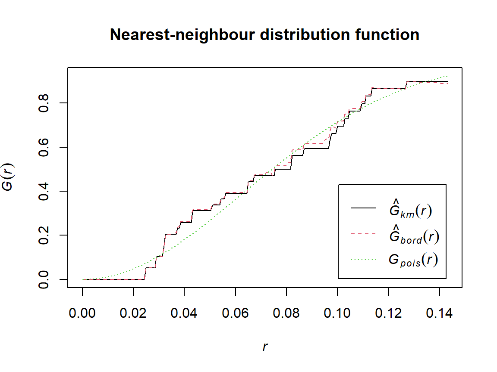
Comparing G across patterns
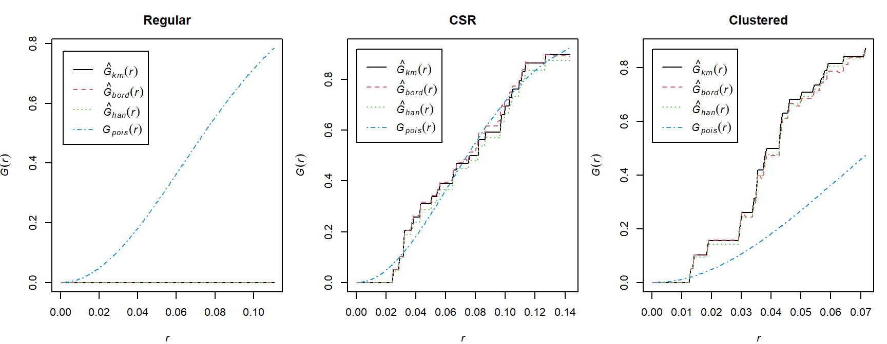
F function - Cumulative frequency distribution of distance E from an arbitrary point to the nearest (other) event - Empty-space distribution function F
The empty-space function is
\[ F(r)=\Pr(E\le r). \]
It is the proportion of locations in the study region that lie within distance \(r\) of an event.
Let
\[ E_1,E_2,\ldots,E_m \]
be the distances from \(m\) randomly selected locations in the study region to their nearest event.
The empirical empty-space function is defined as
\[ \hat{F}(r) = \frac{1}{m} \sum_{i=1}^{m} I(E_i \le r), \]
where the indicator function is
\[ I(E_i \le r) = \begin{cases} 1, & \text{if } E_i \le r, \\ 0, & \text{otherwise}. \end{cases} \]
Thus, \(\hat{F}(r)\) is simply the proportion of randomly selected locations whose nearest event is within a distance \(r\). Equivalently, it is the empirical cumulative distribution function (ECDF) of the point-to-event (empty-space) distances.
In practice, the distances
\[ E_1,E_2,\ldots,E_m \]
are obtained by generating a large number of random locations uniformly over the study region and computing the distance from each location to its nearest observed event.
Under CSR,
\[ F_{\text{CSR}}(r)=1-\exp(-\lambda\pi r^2). \]
Manual approximation to F
set.seed(23)
randompoints = matrix(runif(60),ncol=2)
plot(pp_csr)
points(randompoints, col = "blue", pch=4)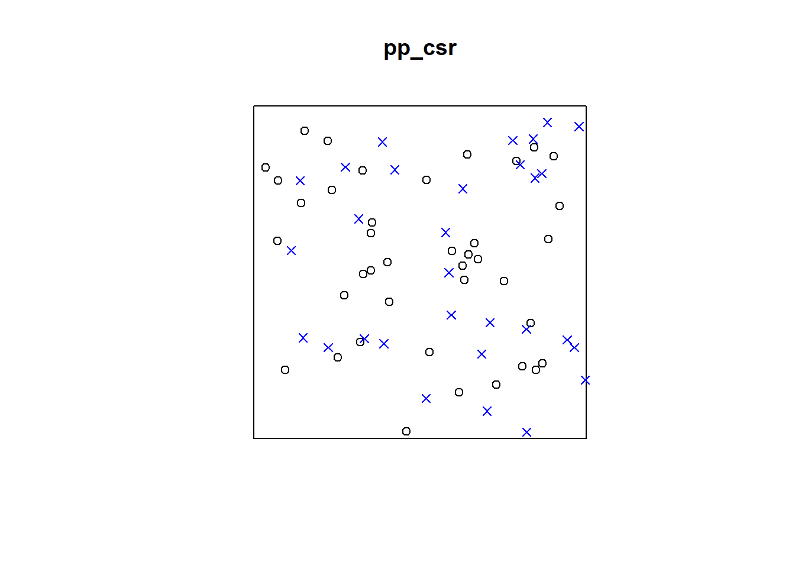
p2e_distances_csr = NULL
mins_csr = NULL
xy = cbind(pp_csr$x, pp_csr$y)
# sqrt((xy[2,1]-randompoints[1,1])^2+(xy[2,2]-randompoints[1,2])^2)
# sqrt((xy[1,1]-randompoints[2,1])^2+(xy[1,2]-randompoints[2,2])^2)
for(i in 1:dim(randompoints)[1]){
dist1 = matrix(pairdist(rbind(randompoints[i,],xy)),41)
p2e_distances_csr = c(p2e_distances_csr,min(dist1[2:41,1]))
mins_csr = c(mins_csr,which.min(dist1[2:41,1]))
}
plot(pp_csr)
ord <- rev(order(p2e_distances_csr))
far25 <- 1:dim(randompoints)[1]
neighbors <- mins_csr
points(randompoints, col='red', pch=4)
points(xy[mins_csr, ], col='blue', pch=20)
# drawing the lines, easiest via a loop
for (i in far25) {
lines(rbind(xy[mins_csr[i], ], randompoints[i, ]), col='red')
}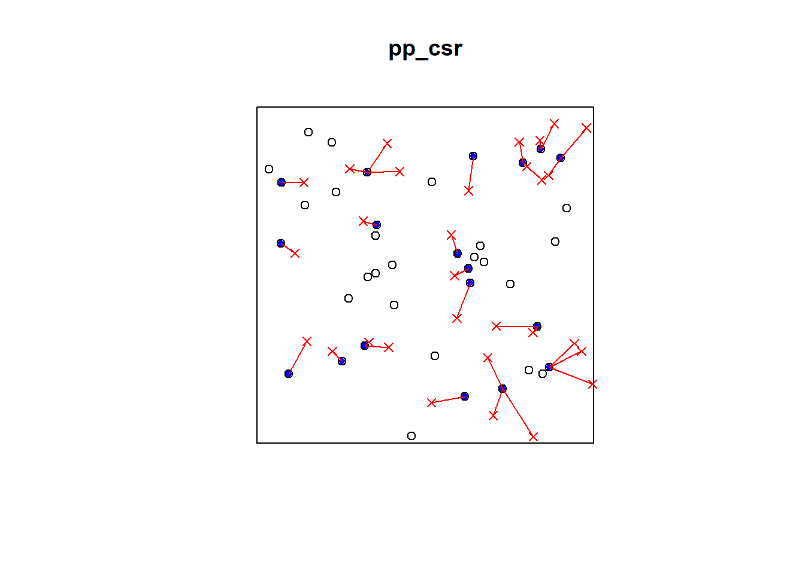
Cluster Pattern
plot(pp_cluster)
points(randompoints, col = "blue", pch=3)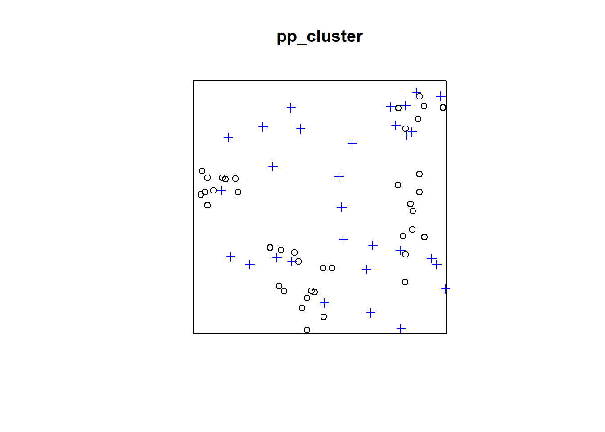
p2e_distances_cluster = NULL
mins_cluster = NULL
xy_cluster = cbind(pp_cluster$x, pp_cluster$y)
for(i in 1:dim(randompoints)[1]){
dist1 = matrix(pairdist(rbind(randompoints[i,],xy_cluster)),41)
p2e_distances_cluster = c(p2e_distances_cluster,min(dist1[2:41,1]))
mins_cluster = c(mins_cluster,which.min(dist1[2:41,1]))
}
plot(pp_cluster)
ord <- rev(order(p2e_distances_cluster))
far25 <- 1:dim(randompoints)[1]
neighbors <- mins_cluster
points(randompoints, col='red', pch=4)
points(xy_cluster[mins_cluster, ], col='blue', pch=20)
# drawing the lines, easiest via a loop
for (i in far25) {
lines(rbind(xy_cluster[mins_cluster[i], ], randompoints[i, ]), col='red')
}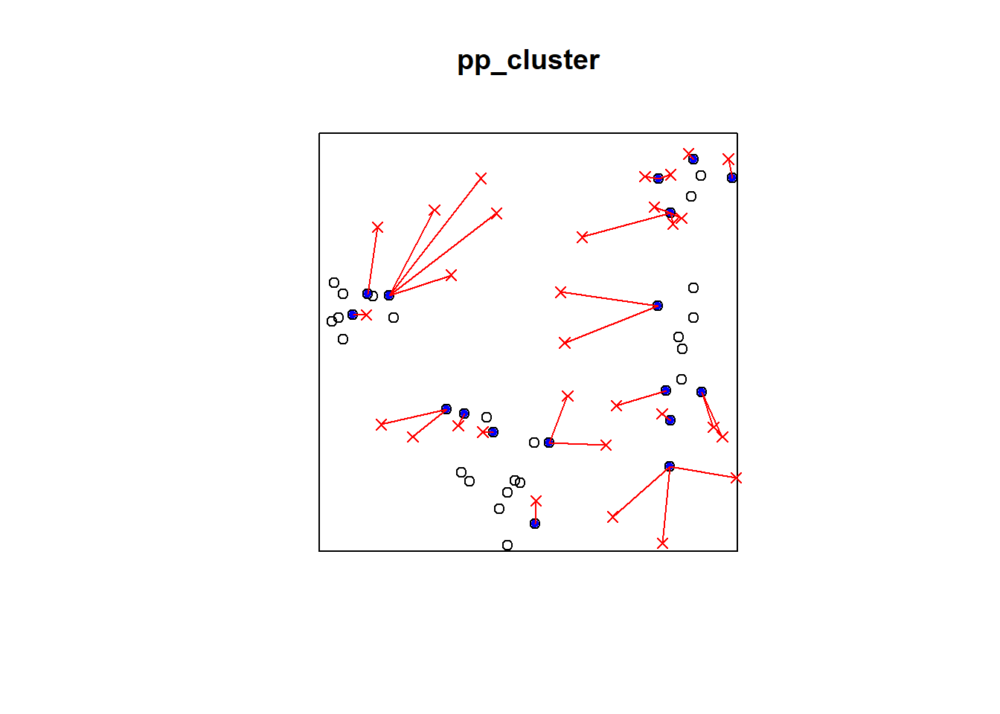
Regular Pattern
p2e_distances_regular = NULL
p2e_mins_regular = NULL
xy_regular = cbind(pp_regular$x, pp_regular$y)
for(i in 1:dim(randompoints)[1]){
dist1 = matrix(pairdist(rbind(randompoints[i,],xy_regular)),41)
p2e_distances_regular = c(p2e_distances_regular,min(dist1[2:41,1]))
p2e_mins_regular = c(p2e_mins_regular,which.min(dist1[2:41,1]))
}
plot(pp_regular)
ord <- rev(order(p2e_distances_regular))
far25 <- 1:dim(randompoints)[1]
neighbors <- p2e_mins_regular
points(randompoints, col='red', pch=4)
points(xy_regular[p2e_mins_regular, ], col='blue', pch=20)
# drawing the lines, easiest via a loop
for (i in far25) {
lines(rbind(xy_regular[p2e_mins_regular[i], ], randompoints[i, ]), col='red')
}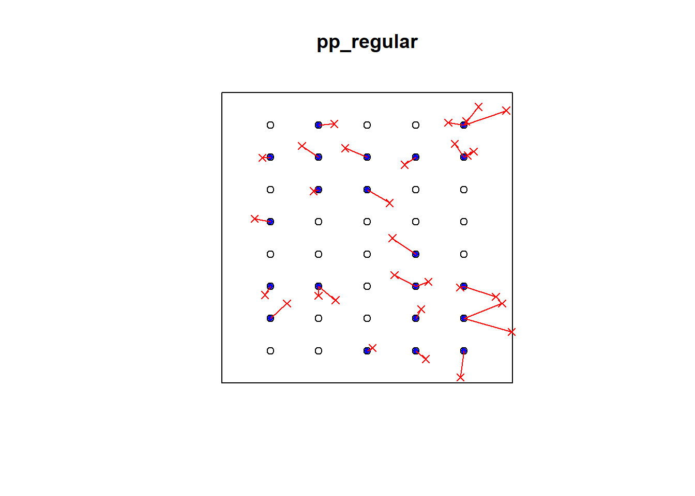
F function using spatstat
F_csr <- Fest(pp_csr, correction = c("rs", "km"))
plot(F_csr, main = "Empty-space distribution function")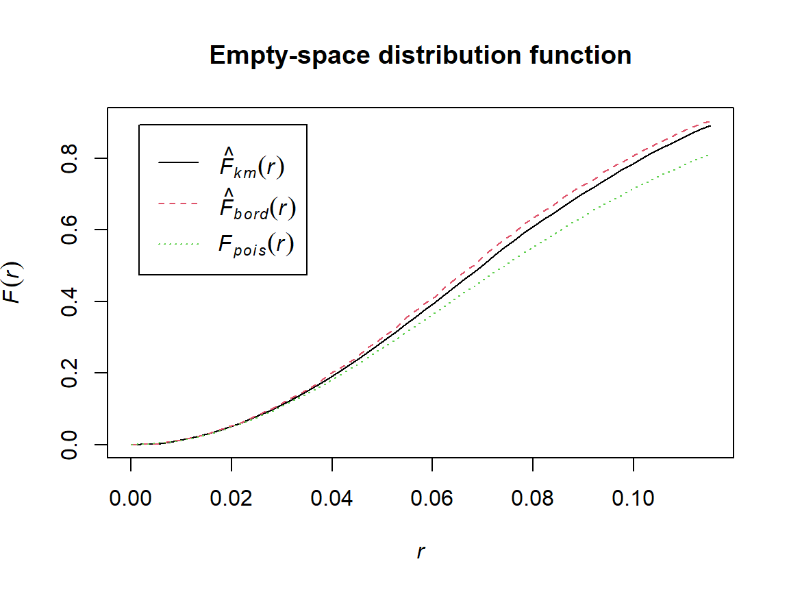
Comparing F across patterns
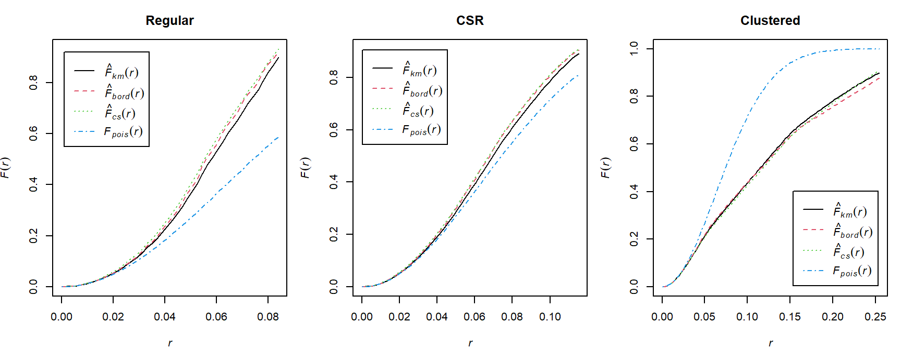
J function
Nearest-neighbour distances and empty-space distances have the same probability distribution if the pattern is completely random. Under various departures from complete spatial randomness, the nearest-neighbour and empty-space distances tend to respond in opposite directions — one becoming larger while the other becomes smaller.
This suggests that a comparison of these two types of distance could be useful in assessing departure from CSR. A useful combination of F and G, suggested by fundamental theory, is the J-function [663] of a stationary point process,
The \(J\) function combines \(F\) and \(G\):
\[ J(r)=\frac{1-G(r)}{1-F(r)}, \]
defined for all \(r\geq0\) for distances where
\[ F(r)<1. \]
Under CSR,
\[ J_{pois}(r)\equiv 1\\ F_{pois}(r)\equiv G_{pois}(r) \]
Interpreting J
- \(J(r)>1\): consistent with regularity at scale \(r\);
- \(J(r)<1\): consistent with clustering at scale \(r\);
- \(J(r)\approx1\): consistent with CSR at scale \(r\).

Simulation envelopes
A visual comparison with a theoretical curve does not account for random variation. Simulation envelopes provide a reference band under a fitted null model.
set.seed(2026)
env_G <- envelope(
pp_csr,
fun = Gest,
nsim = 39,
correction = "km",
verbose = FALSE
)
plot(env_G, main = "Simulation envelope for G")